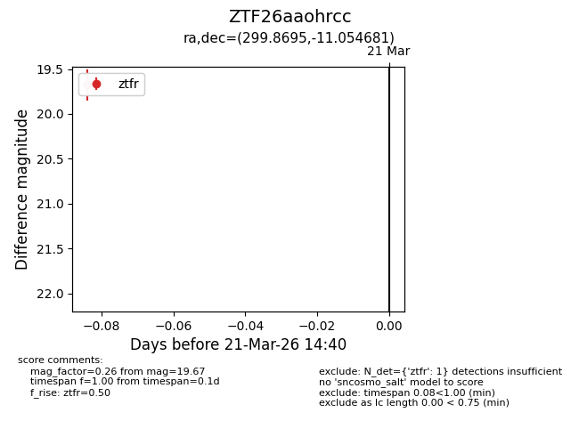
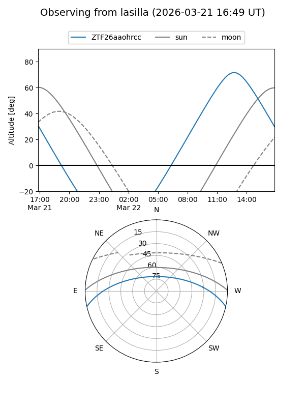
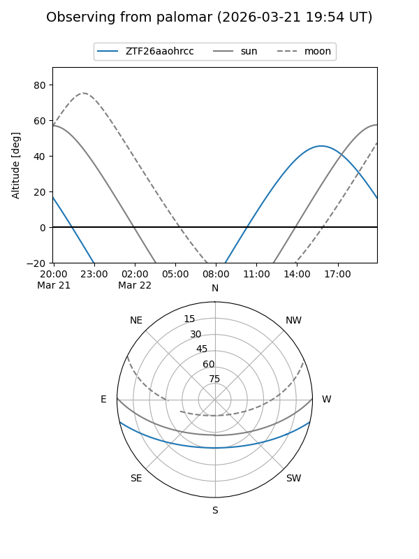

ZTF26aaohrcc
Target ZTF26aaohrcc at 2026-03-21 14:42
Aliases and brokers:
FINK: link
Lasair: link
ALeRCE: link
alt names
ZTF26aaohrcc (ztf,fink_ztf)
Coordinates:
equatorial (ra, dec) = 299.8695,-11.05468
equatorial (HMS+DMS) = 19:59:28.67,-11:03:16.85
galactic (l, b) = (30.5076,-20.05717)
Flags:
Photometry:
last ztfr=19.67
1 ztfr detections
Lightcurve

Visibility


Additional plots